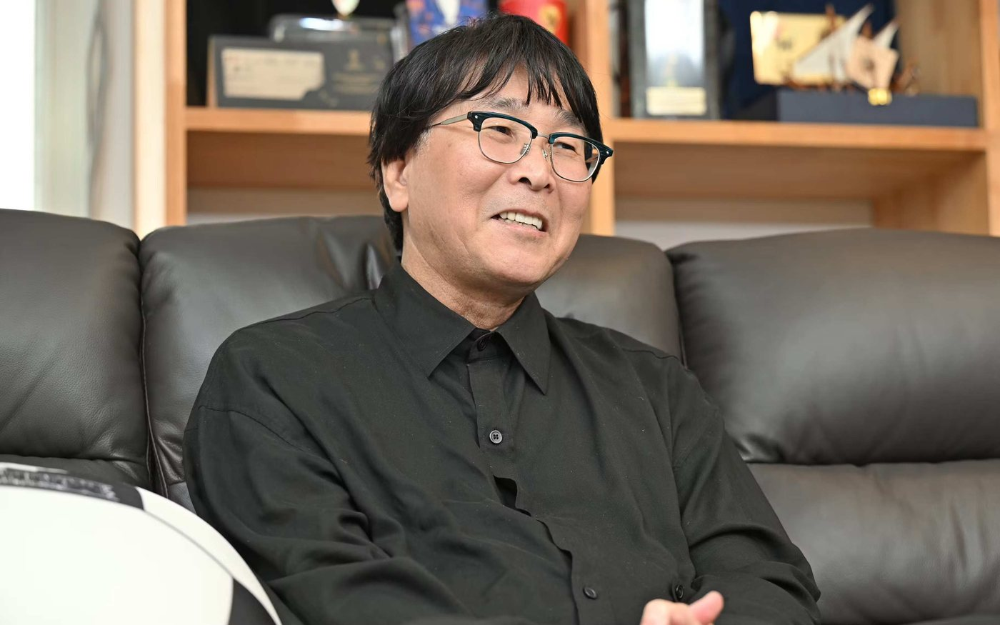
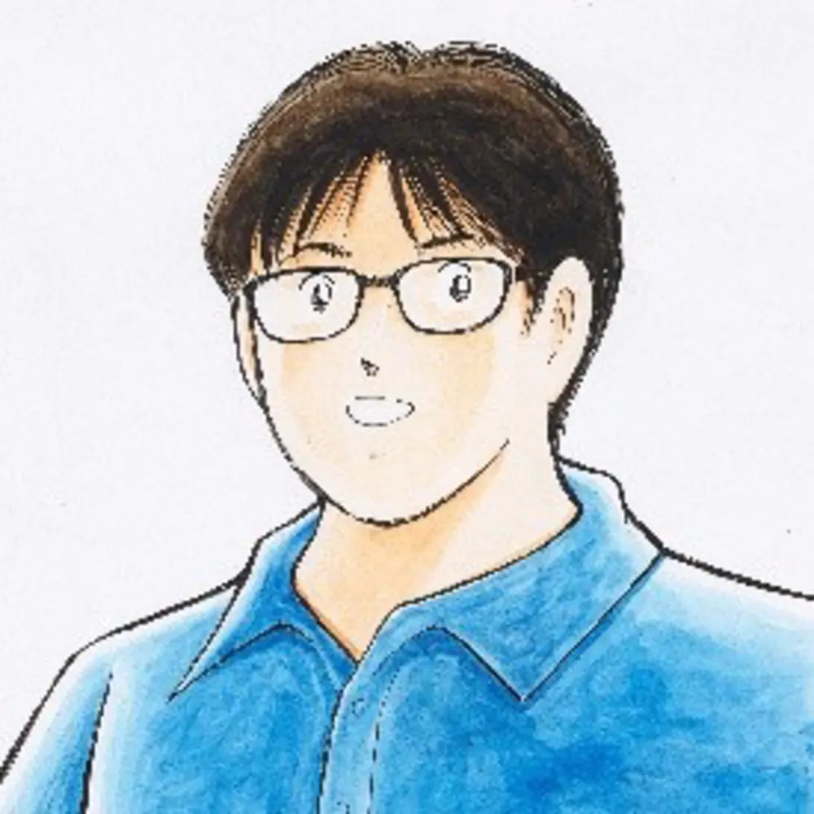
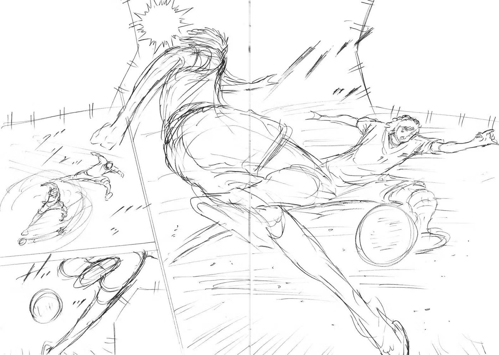

——为什么采用「分镜稿连载」？

我的漫画，是在稿纸上画好分镜，再进行描线上墨、添加阴影，并由工作人员细致地补画背景，最终完成的。这套流程，我一直视为理所当然。
不过，画了 40 多年漫画，我重新切实体会到——作画实在耗时太长，体力上也已经相当吃力。如果用现在这种方式继续画翼的故事，就算撑到 80 岁左右，最多也只能画到把最后连载中的奥运篇画完为止。
另一方面，我的头脑还很精神，故事的走向至今仍能不断浮现。以前曾试着只把分镜汇总画出来，结果努力 1 个月，就画出了 1 年之后的分量。努力 1 年的话，说不定能推进到 10 年后。我甚至想过——只要画分镜的话，说不定能把翼一直画到世界杯夺冠为止。
——漫画家大多没有「引退」一说。您意识到年龄了吗？
我今年 64 岁，正是社会上开始考虑退休的年纪。同龄人里也有人已经引退，昔日的前辈漫画大师中，也有 60 岁左右便无法再像从前那样继续作画的人。对于自己该如何退场，我是有意识的。
《明日之丈》的千叶彻弥老师在身体垮掉之后退居一线，以半引退的状态继续活动；而《大饭桶》的水岛新司老师，70 岁过后仍坚持周刊连载，直到临终之前都伏案于原稿之前。在我尊敬的这两大漫画家之间该走哪条路——在这次决断之际，我确实思考过。分镜连载，正是介于两位老师之间的道路。

——通过网络分镜连载，已经看到了怎样的可能性？
起初完全不知道能不能被大家接受。读者会愿意读分镜吗？还是说大家读的终究是「漫画」？铅笔画稿难免粗糙，场景也更难看清。但连载开始后，收到了「画到这个程度，脑内就能自行补全了」「老师分镜画得真好」这样的感想，对我来说是很大的鼓励。
杂志连载有描线上墨的工夫，还有页数限制；网络连载则可以不必太在意页数，把内容放开来画，也可以做紧凑的短回。剩下的就是「画到什么程度」的问题——优先速度的话，不画得那么细致为好；可为了把画面传达给读者，某种程度上又必须画得清楚。就是这种反复拉锯。
——关于这些分镜稿之后的打算？
不只是网络，我也想以册子的形式把它们留存下来。在我不在了之后，若能把我的分镜交给能画出与我几乎一样画风的人，请他们据此刻画成漫画，那也很好。只要能把翼的故事传递下去。
以分镜形式留下的原稿，将来或许也能由 AI（人工智能）来描线上色——相当于把画面制作中最繁重的部分交出去。我认为，把这一切以分镜的形式留存下来，是有价值的。
（采访者：鸿知佳子）